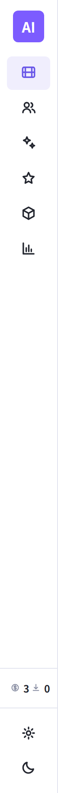
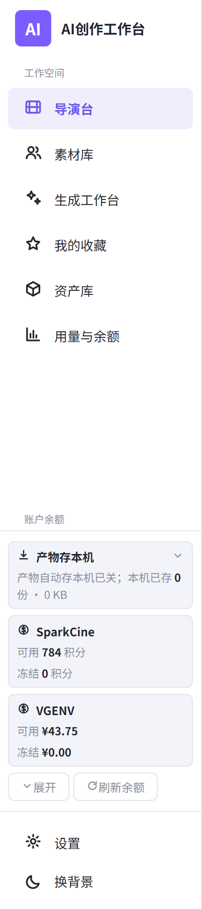

导演台
2 个项目
4 场
真机今天只有 66px 收起 / 200px 展开 两档：收起后只剩六个认不出的图标， 开关藏在左上角那个 AI 方块里。 这一稿只做两个形态 —— 满 232px（名字 + 一张「此刻」卡）与 窄 56px（图标 + 两字短标签，认得出，不必悬停）， 收 / 展是顶行右端单独一颗按钮。
跑隔离探针代理截的真机（浅色档 1440×900）。左边收起态 66px：六个图标， 光看形状分不出谁是谁 —— 产品自己的代码注释写着「功能还在，但认不出来」。

